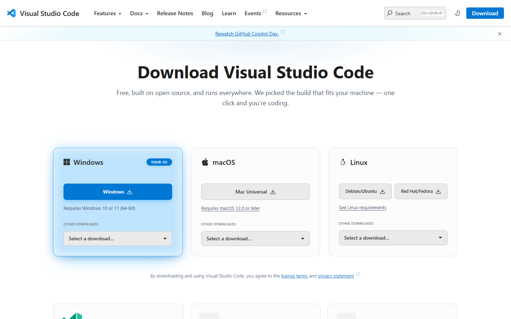
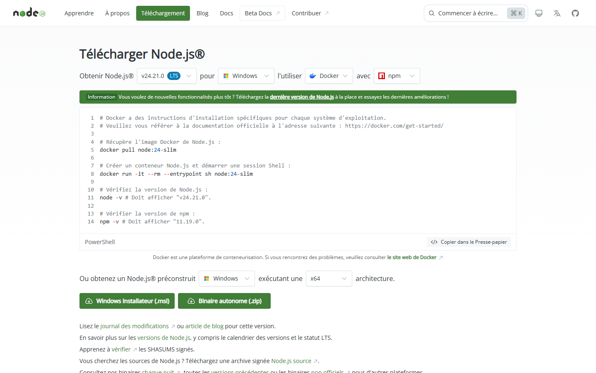
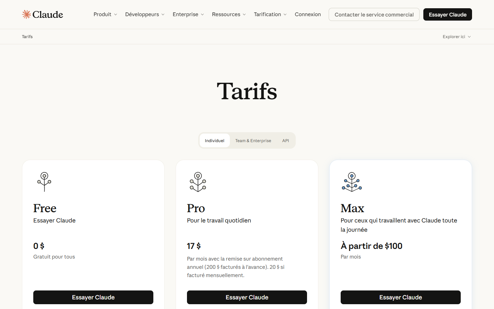

Avant de commencer
Prérequis
Tout ce qu'il faut installer avant votre première vidéo avec Pulse Motion. Vous n'avez jamais installé de logiciel de développeur ? Cette page est faite pour vous : chaque étape est détaillée clic par clic et se termine par une vérification simple.
1 Ce dont vous aurez besoin
Pulse Motion fonctionne à l'intérieur de Claude Code, l'assistant d'Anthropic. Il fabrique vos vidéos sur votre ordinateur : aucun service en ligne, aucun compte en plus, aucune vidéo envoyée ailleurs. Vous n'aurez rien à programmer : vous allez télécharger, cliquer sur « Suivant », et copier quelques commandes que cette page vous donne.
| Outil | À quoi il sert | Obligatoire ? |
|---|---|---|
| VS Code et l'extension Claude Code | L'endroit où vous discutez avec Claude, à côté des fichiers de votre vidéo. | Conseillé (le terminal ou Claude Desktop marchent aussi) |
| Un abonnement Claude | Claude Code demande une offre Pro, Max, Team ou Enterprise, ou un compte Console. | Oui |
| Node.js 20 ou plus | Fait tourner Pulse Motion : assemblage, contrôles, aperçu, export. Rien d'autre à installer avec lui. | Oui |
| Chrome ou Edge | Affiche l'aperçu de la vidéo, contrôle la vidéo rendue et fabrique le MP4. | Oui |
| ffmpeg | Fabrique le MP4 en export fidèle, avec un son propre, et importe des voix dans tous les formats. | Facultatif : Pulse Motion vous le propose au premier export |
| Python et la transcription | Cale les sous-titres et les animations sur les vrais mots de votre voix, et découpe un enregistrement de toute la vidéo. | Facultatif : Pulse Motion vous le propose quand vous ajoutez une voix |
2 Installer VS Code 10 min
VS Code (Visual Studio Code) est un éditeur gratuit de Microsoft : il affiche les fichiers de votre vidéo (le déroulé, les scènes), et c'est là que vous discuterez avec Claude.
Windows
- Ouvrez code.visualstudio.com/download et cliquez sur le grand bouton Windows (Windows 10 ou 11).
- Ouvrez le fichier téléchargé (
VSCodeUserSetup-x64-….exe, dans le dossier Téléchargements). Puis, dans l'installateur :- licence : cochez J'accepte l'accord, puis Suivant ;
- dossier d'installation et dossier du menu Démarrer : gardez tout, Suivant ;
- Tâches supplémentaires : gardez cochée Ajouter à PATH. Vous pouvez aussi cocher les deux cases « Ajouter l'action « Ouvrir avec Code » » : un clic droit sur un dossier l'ouvrira dans VS Code ;
- Installer, puis Terminer.
Où le retrouver ensuite : menu Démarrer, « Visual Studio Code ».
macOS
- Ouvrez code.visualstudio.com/download et cliquez sur le grand bouton Mac (version « Universal », pour tous les Mac).
- Ouvrez le fichier téléchargé, puis glissez Visual Studio Code dans le dossier Applications.
- Ouvrez-le depuis Applications. À la première ouverture, macOS demande confirmation : cliquez sur Ouvrir.
Où le retrouver ensuite : dossier Applications, « Visual Studio Code ».

Les menus de VS Code sont en anglais au départ. Ce n'est pas gênant : cette page donne le nom anglais de chaque menu.
Sous Windows, une fenêtre bleue « Windows a protégé votre ordinateur » s'affiche
Vérifiez que le fichier vient bien de code.visualstudio.com, puis cliquez sur Informations complémentaires et Exécuter quand même.
Je préfère VS Code en français
Ouvrez la liste des extensions (Ctrl + Maj + X, ou Cmd + Maj + X sur Mac), cherchez « French Language Pack » publié par Microsoft, installez-le, puis redémarrez VS Code.
3 Installer Node.js 10 min
Node.js fait tourner Pulse Motion : il assemble la vidéo, la contrôle, sert l'aperçu et fabrique l'export. Pulse Motion n'a besoin d'aucune autre brique : rien à télécharger en plus.
Pulse Motion demande Node.js 20 ou plus. Prenez la version marquée LTS (« support à long terme », la plus stable).
Windows
- Ouvrez nodejs.org/fr/download.
- En haut, vérifiez que la version choisie porte la mention LTS.
- Plus bas, cliquez sur le bouton Windows Installateur (.msi).
- Ouvrez le fichier téléchargé. Puis, dans l'installateur :
- premier écran : Next ;
- licence : cochez la case d'acceptation, puis Next ;
- dossier d'installation et liste des éléments : gardez tout, Next ;
- écran des outils pour les modules natifs (« Tools for Native Modules ») : laissez la case décochée, puis Next. Ces outils ne servent pas à Pulse Motion ;
- Install, puis Oui quand Windows demande l'autorisation, et enfin Finish.
macOS
- Ouvrez nodejs.org/fr/download.
- En haut, vérifiez que la version choisie porte la mention LTS.
- Plus bas, cliquez sur le bouton macOS Installateur (.pkg).
- Ouvrez le fichier téléchargé, puis cliquez sur Continuer à chaque écran, Accepter la licence, et Installer. Le Mac demande votre mot de passe de session : saisissez-le. Terminez par Fermer.

Node.js n'a pas de fenêtre : il travaille en coulisse. Fermez complètement VS Code, rouvrez-le, ouvrez le terminal (menu Terminal → New Terminal), puis vérifiez :
node --versionLa version affichée est plus ancienne que 20
Une ancienne version de Node.js est déjà installée. Installez la version LTS par-dessus depuis nodejs.org, puis fermez et rouvrez VS Code. Pulse Motion vous le rappelle d'ailleurs au démarrage de chaque session tant que la version est trop ancienne.
Plus tard, Pulse Motion dit « node introuvable » alors qu'il est installé
Claude Code lit la liste des logiciels au moment où il démarre. Fermez complètement VS Code et rouvrez-le (ou Claude Desktop, ou le terminal, selon la façon dont vous travaillez).
4 L'abonnement Claude et l'extension Claude Code 15 min
Claude Code est l'assistant d'Anthropic qui travaille avec vous sur les fichiers d'un dossier. L'extension l'ajoute à VS Code, dans un panneau de discussion.
Prendre un abonnement
Claude Code demande un compte Claude Pro, Max, Team ou Enterprise, ou un compte Console (paiement à l'usage). L'offre gratuite ne suffit pas. Pour débuter seul, l'abonnement Pro est le plus simple.
- Ouvrez claude.com/pricing.
- Choisissez une offre et cliquez sur son bouton. Créez votre compte (ou connectez-vous), puis réglez l'abonnement.
- Notez l'adresse e-mail utilisée : c'est avec elle que vous vous connecterez dans VS Code.

Installer l'extension
- Dans VS Code, appuyez sur Ctrl + Maj + X (Windows) ou Cmd + Maj + X (macOS) : la liste des extensions s'ouvre à gauche.
- Dans le champ de recherche, tapez Claude Code.
- Choisissez celle éditée par Anthropic, puis cliquez sur Install.
Ouvrir le panneau et se connecter
- Cliquez sur l'icône en forme d'étincelle dans la barre verticale de gauche, ou sur ✻ Claude Code en bas à droite de la fenêtre.
- La première fois, un écran de connexion apparaît : cliquez sur Sign in, connectez-vous dans votre navigateur avec le compte de votre abonnement, et acceptez.
- Revenez dans VS Code : le panneau Claude affiche une zone de saisie.
Dans la zone de saisie, tapez / : la liste des commandes disponibles s'ouvre. C'est ainsi que vous lancerez les commandes de Pulse Motion, comme /pulse-motion:creer.
Source : utiliser Claude Code dans VS Code.
L'icône en forme d'étincelle n'apparaît pas
Redémarrez VS Code. Ou ouvrez la palette de commandes (Ctrl + Maj + P, ou Cmd + Maj + P sur Mac), tapez Developer: Reload Window et validez.
Le panneau me propose de passer à une offre payante
Le compte utilisé n'a pas d'abonnement compatible. Vérifiez l'adresse e-mail avec laquelle vous vous êtes connecté.
5 Installer Claude Code pour le terminal 10 min
La copie de Claude Code fournie avec l'extension sert à son panneau seulement. Les commandes de mise à jour du plugin se tapent, elles, dans le terminal. Installez donc aussi Claude Code pour le terminal : une seule fois, puis il se met à jour tout seul.
Dans le terminal de VS Code (menu Terminal → New Terminal) :
Windows
La ligne doit commencer par PS (PowerShell). Collez cette commande, puis Entrée :
irm https://claude.ai/install.ps1 | iexmacOS
Collez cette commande, puis Entrée :
curl -fsSL https://claude.ai/install.sh | bashFermez complètement VS Code, rouvrez-le, ouvrez le terminal, puis vérifiez :
claude --versionSource : la documentation officielle de Claude Code.
« claude n'est pas reconnu » ou « command not found: claude »
Fermez complètement VS Code et rouvrez-le. Si le message reste, suivez la partie « Dépannage » du guide du terminal.
Sous Windows : « irm n'est pas reconnu »
Le terminal est l'invite de commandes (CMD), pas PowerShell. Dans le terminal de VS Code, ouvrez la petite flèche à côté du + et choisissez PowerShell, puis relancez la commande.
7 Installer Pulse Motion et le tenir à jour 5 min
Pulse Motion est un plugin (un module qui s'ajoute à Claude Code), rangé dans un catalogue nommé pulse-motion. On ajoute d'abord le catalogue, puis le plugin.
Installer, dans VS Code
- Dans le panneau Claude Code, tapez
/plugins, puis Entrée : la fenêtre Manage plugins s'ouvre. - Cliquez sur l'onglet Marketplaces. Dans le champ prévu pour ajouter un catalogue, saisissez
jdelauney/pulse-motionet validez. - Revenez à l'onglet Plugins. Cherchez
pulse-motion, puis cliquez sur Install. Choisissez Install for you : Pulse Motion sera disponible dans tous vos dossiers. - Fermez complètement VS Code et rouvrez-le.
Ou bien : installer dans Claude Code
Dans le panneau Claude Code, ou dans Claude Code lancé dans un terminal (commande claude), tapez une ligne à la fois :
/plugin marketplace add jdelauney/pulse-motion/plugin install pulse-motion@pulse-motionChoisissez Install for you (user scope) si la question est posée, puis relancez Claude Code.
Vérifier
Dans le panneau Claude Code, tapez /pulse-motion: (sans appuyer sur Entrée).
Mettre à jour
Les corrections de Pulse Motion arrivent chez vous seulement après une mise à jour. Dans le terminal de VS Code :
claude plugin marketplace update pulse-motion
claude plugin update pulse-motion@pulse-motionPuis fermez complètement VS Code et rouvrez-le : la nouvelle version se charge au démarrage.
Ne plus y penser : la mise à jour automatique
- Dans le terminal de VS Code, tapez
claude, puis Entrée. - Tapez
/plugin, puis Entrée. - Ouvrez l'onglet Marketplaces (touche Tab pour passer d'un onglet à l'autre).
- Choisissez
pulse-motion, puis Enable auto-update. - Quittez avec
exit.
Sources : le dépôt de Pulse Motion et installer et gérer les plugins.
Les commandes /pulse-motion: n'apparaissent pas
Fermez complètement VS Code et rouvrez-le. Si elles manquent toujours, tapez /plugins : pulse-motion doit figurer dans l'onglet Plugins, avec son interrupteur activé. Un plugin qui n'a pas pu se charger affiche la raison sur sa ligne.
L'ajout du catalogue échoue
Vérifiez votre connexion à Internet et l'orthographe exacte : jdelauney/pulse-motion. Puis recommencez.
8 Facultatif : ffmpeg, pour l'export fidèle 5 min
ffmpeg est un petit logiciel libre qui fabrique la vidéo en haute qualité, avec un son propre. Sans lui, Pulse Motion exporte quand même, directement dans le navigateur. Avec lui, l'export est fidèle : les vraies images du navigateur, le son mesuré au bon niveau.
Le plus simple : ne faites rien maintenant. Au premier /pulse-motion:exporter, Pulse Motion vérifie si ffmpeg est là et vous propose de l'installer, avec votre accord. Si vous préférez l'installer vous-même :
Windows
Dans le terminal de VS Code :
winget install --id Gyan.FFmpeg -e --accept-source-agreements --accept-package-agreementsmacOS
Avec Homebrew installé, dans le terminal :
brew install ffmpegFermez complètement VS Code et rouvrez-le, puis vérifiez :
ffmpeg -versionSous Linux, Pulse Motion me donne une commande à taper
L'installation demande votre mot de passe : Pulse Motion ne peut pas la lancer à votre place. Tapez la commande qu'il vous donne dans un terminal, puis dites-lui que c'est fait.
9 Facultatif : la transcription des voix 10 min
Quand vous ajoutez votre voix, la transcription retrouve l'instant exact de chaque mot. Les sous-titres et les animations se calent alors sur vos vrais mots. Elle est indispensable pour découper un enregistrement de toute la vidéo en scènes. Sans elle, tout marche quand même : les mots sont calés au mieux.
Elle tourne sur votre ordinateur, avec Python et un modèle de reconnaissance de la parole (environ 800 Mo, ou 250 Mo en version allégée). Le plus simple, là encore : attendez que Pulse Motion vous la propose pendant /pulse-motion:creer. Avec votre accord, il installe Python si besoin, puis la transcription, en quelques minutes.
L'installation de la transcription a échoué
Pulse Motion le dit en une phrase et continue sans : la vidéo est fabriquée, les mots sont calés au mieux. Vous pourrez réessayer plus tard en demandant « installe la transcription ».
10 Vérification finale 5 min
- Créez un dossier vide, par exemple
chaine-du-froid, là où vous rangez vos documents. Une vidéo = un dossier. - Dans VS Code, menu File → Open Folder…, choisissez ce dossier. Faites confiance à ses auteurs si VS Code le demande : c'est votre dossier.
- Ouvrez le panneau Claude Code et tapez
/pulse-motion:.